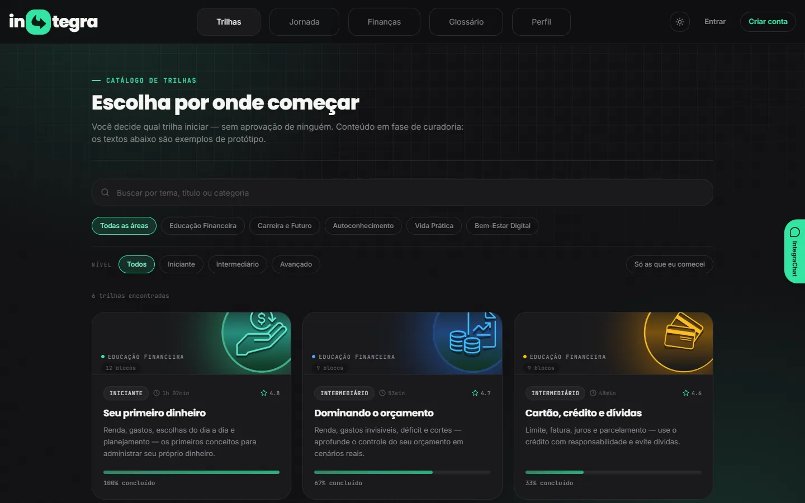
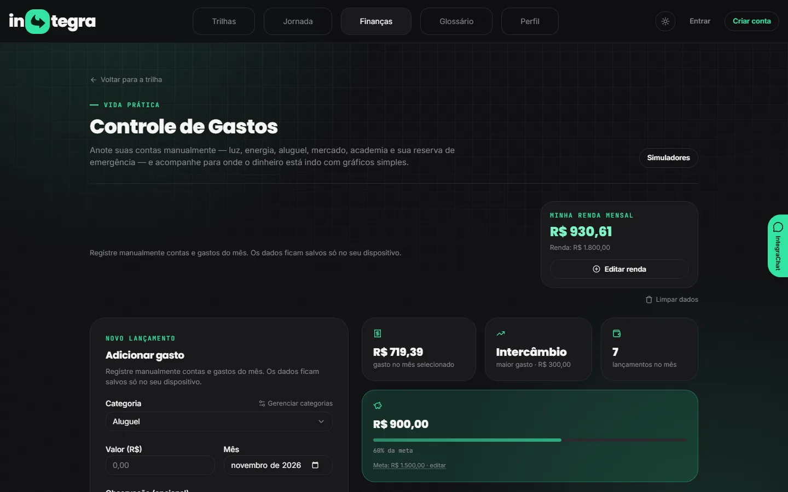
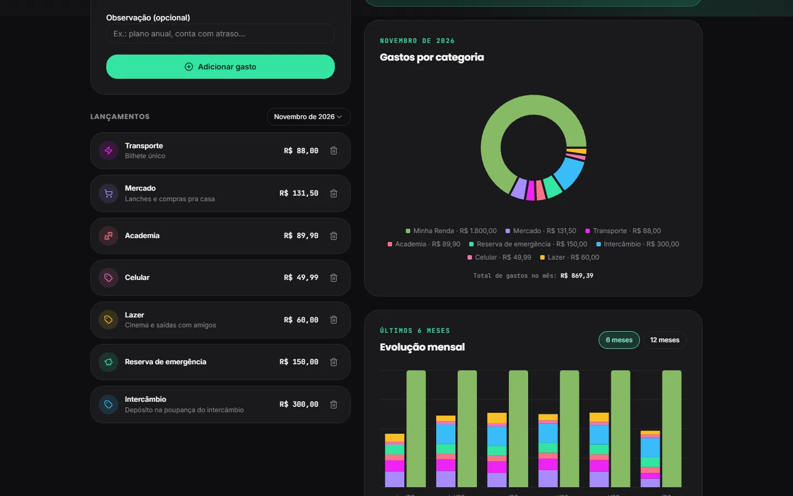
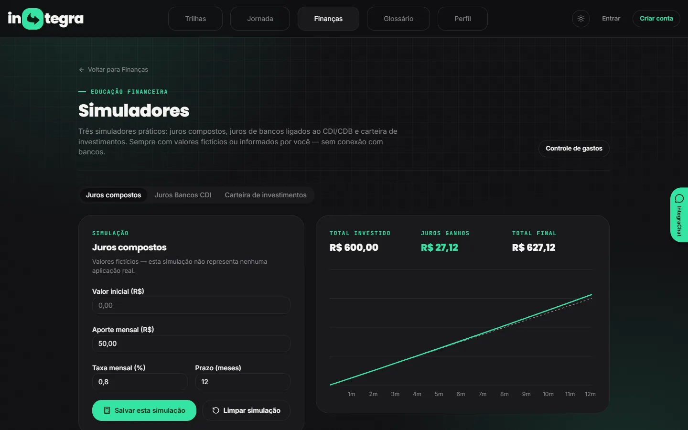
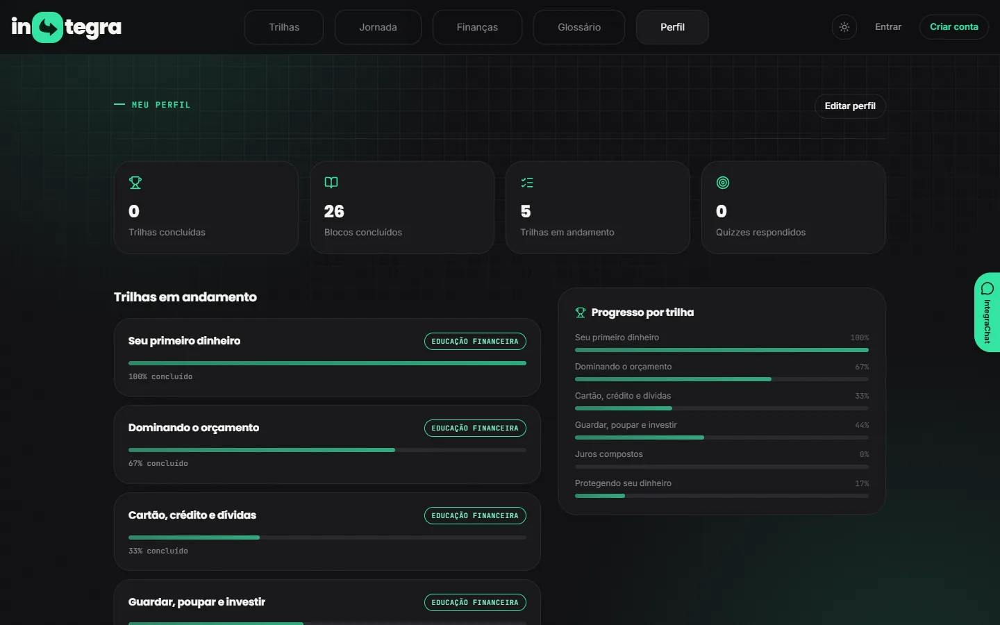
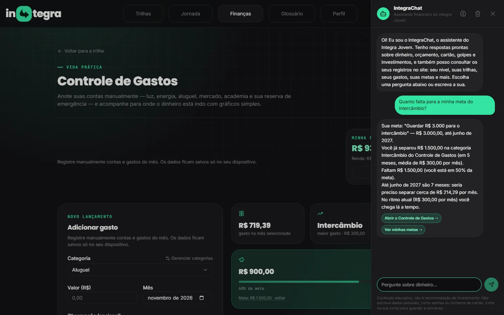
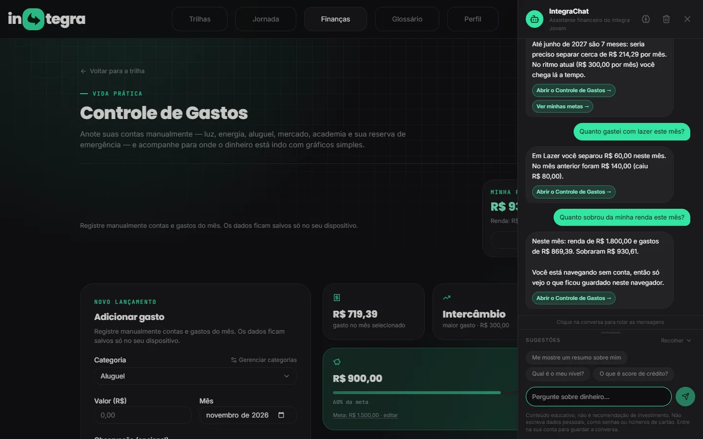
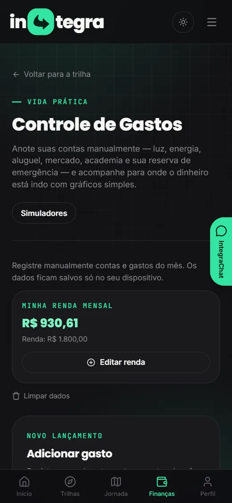
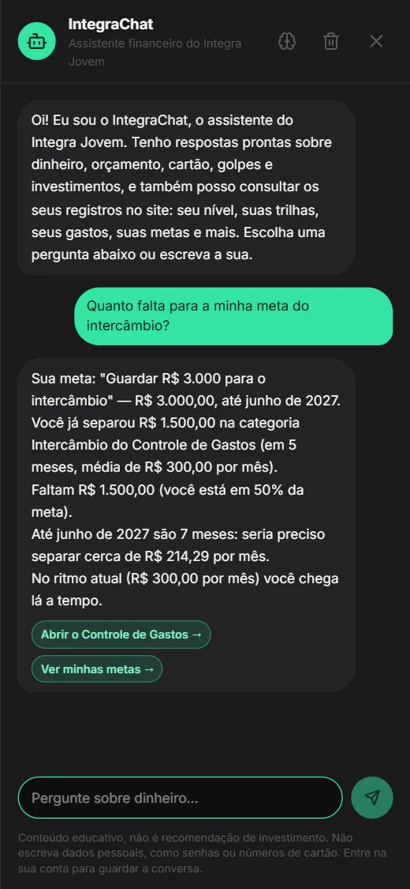

Integra Jovem
Uma plataforma que ajuda jovens que estão terminando a escola a se preparar para a vida adulta, com trilhas curtas sobre dinheiro, carreira, autoconhecimento e bem-estar digital.
- Curso
- Técnico em Desenvolvimento de Sistemas
- Escola
- Etec Dr. Demétrio Azevedo Jr.
- Equipe
- Thiago Proença, Kauã Felipe e Victória Monike
- Meu papel
- Full stack: front-end e back-end

O problema
Muitos jovens terminam a escola sem saber organizar o próprio dinheiro, escolher um caminho profissional ou lidar com as responsabilidades da vida adulta. O conteúdo que existe costuma ser longo, cheio de termos difíceis ou cercado de anúncios.
A proposta
Um espaço sem anúncios e sem vigilância, em que o jovem escolhe o que quer aprender e avança no próprio ritmo:
- Trilhas curtas por área e nível, com busca, filtros e progresso salvo.
- Jornada com experiência (XP), níveis, conquistas e medalhas dos desafios.
- Finanças: controle de gastos por categoria com gráficos, meta de reserva de emergência e simuladores de juros compostos e de juros dos bancos.
- Glossário com os termos difíceis explicados em linguagem simples.
- IntegraChat: um assistente que responde dúvidas e acolhe quem demonstra estar passando por um momento difícil.
- Conta e perfil, com cadastro, login, recuperação de senha e proteção contra robôs (captcha).


Finanças: controle de gastos
O jovem informa a renda do mês e anota os gastos por categoria. Pode criar categorias próprias, como "Intercâmbio" ou "Lazer". O sistema mostra quanto sobrou, o maior gasto, a meta da reserva de emergência e gráficos do mês e dos últimos meses. Há também simuladores de juros compostos e de juros dos bancos.



IntegraChat: o assistente que entende as suas metas
O IntegraChat responde dúvidas sobre dinheiro e também consulta os registros do próprio usuário. Ele foi feito com regras próprias em TypeScript, sem depender de IA externa. O mais interessante é como ele junta duas partes do site:
- No Perfil, o jovem cria uma meta com valor e prazo, por exemplo "Guardar R$ 3.000 para o intercâmbio", até junho.
- Nas Finanças, ele registra o que vai separando numa categoria com o mesmo assunto ("Intercâmbio").
- Quando pergunta "Quanto falta para a minha meta do intercâmbio?", o IntegraChat encontra a meta, soma o que já foi separado, calcula quanto falta e a porcentagem, quanto precisa guardar por mês até o prazo e se, no ritmo atual, a meta fica pronta a tempo.



No celular


Minha parte
Trabalhei como full stack, participando tanto do front-end quanto do back-end do projeto.
Tecnologias
Next.js (App Router), React, TypeScript, Tailwind CSS, componentes shadcn/ui e Supabase para contas e dados. O projeto começou como protótipo e foi migrado para Next.js, mantendo o visual e o comportamento.